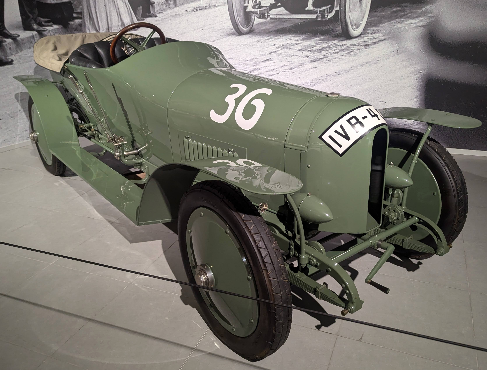
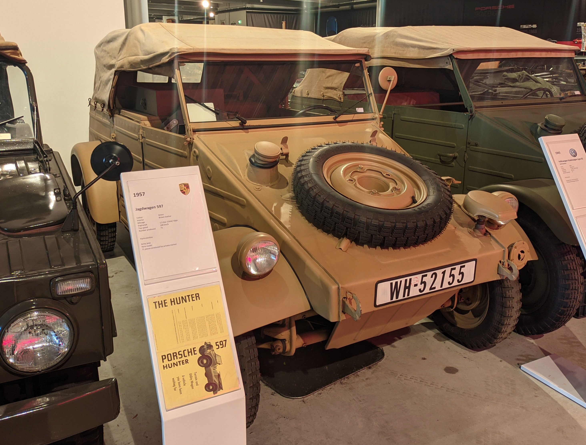
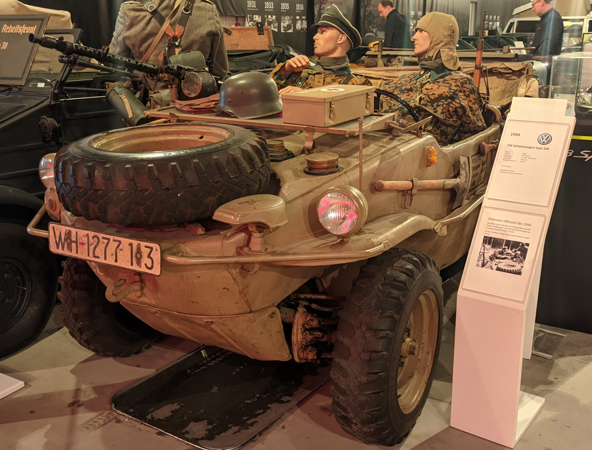

License Plates of Germany (DE)
Photographed in The Netherlands


Normal series. 1956-2000 plate style. DN = Düren District.


Normal series. 1956-2000 plate style. TBB = Main-Tauber District.


Tax free series. 1956-2000 plate style. LB = Ludwigsburg District.


Moped series. 2024 plate. Annual plates changing between black, blue and green. Blocks of serials are issued by different insurance companies.


Normal Series from 1906 to 1945. Baden.


Normal series from 1906-45. WH = Wehrmacht Heer (Army). It is unlikely these are genuine plates.


Normal series from 1906-45. WH = Wehrmacht Heer (Army). It is unlikely these are genuine plates.